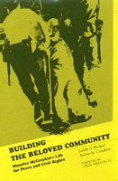

One man's story interweaves with many of the crucial social issues of the past fifty years
One man's story interweaves with many of the crucial social issues of the past fifty years


 One man's story interweaves with many of the crucial social issues of the past fifty years
One man's story interweaves with many of the crucial social issues of the past fifty years

|  |
Building the Beloved CommunityMaurice McCrackin's Life for Peace and Civil RightsJudith A. Bechtel and Robert M. Coughlin, foreword by Daniel Berrigancloth EAN: 978-0-87722-783-0 (ISBN: 0-87722-783-7) |
"Bechtel and Coughlin make clear that McCrackin's life has been dedicated to 'Peace and Civil Rights.' It is a dedication emblazoned in bedrock, as unmovable as a mountain. Their book lifts up in an effective manner the best of the human spirit and experience as it was lived out by one man who stuck to his commitments and values in the face of considerable political and social opposition. Such a story is a valuable gift to any and all who care about the truth and its future."
—Patrick G. Coy, National Chair, The Fellowship of Reconciliation—USA
This biography of Maurice McCrackin, now in his mid-eighties, chronicles how one man’s story interweaves with many of the crucial social issues of the past fifty years: integration, civil rights, McCarthyism, schooling, the arms build-up, poverty, treatment of prisoners, and homelessness, among others.
As pastor to various congregations throughout the midwest, McCrackin chose social change as his mission and addressed international issues in his sermons in order to make connections between the global and the personal. As an active participant in the Fellowship of Reconciliation, he found ways to inject pacifism into the daily activities of a poor Cincinnati neighborhood. An effective leader and negotiator, his ability to achieve integration within his environment was due to his understanding of collaboration and mutual empowerment as well as his gentleness and good humor. From World War II through recent liberation struggles in Central America, tumultuous events provided a stage for Maurice McCrackin’s ministry.
Building the Beloved Community details the terrible price Reverend Maurice McCrackin paid for his peace and civil rights activism—defrocking, public vilification, numerous jailings—and the widespread honor and vindication he has earned in recent years for his lifetime of service.
Foreword – Daniel Berrigan, S.J.
Prefaces
Acknowledgments
1. "Lest We All Become Toothless, Blind, and Dead": Torture in a D.C. Jail
2. "Not Lip Service, but Life Service": Growing Up in Monmouth
3. "That We Share the World's Pain": Mission to Iran
4. "Something Decent and Daring Must Be Done": Toward an Integrated Church
5. "Breaking the Respectability Barrier": Tax Resistance and Picketing
6. "Are You a Communist?": Highlander 1957
7. "To Break the Fetters of Conformity": Allenwood Federal Prison
8. "Share a Bit of the Danger": Operation Freedom
9. "Is Caesar Lord of Conscience?": Church Trials and Defrocking
10. "An Island of Sanity in a Sea of Insanity": A New Church and New Ministries
11. "A Real Pin in the System": Kidnapping and Imprisonment
12. "A Light Shines in the Darkness": An Active Retirement
Notes
Bibliography
Index
Judith A. Bechtel is Associate Professor of Literature and Language at Northern Kentucky University.
Robert M. Coughlin is Associate Professor of English at Lakeland Community College in Mentor, Ohio.
Biography/Memoir/Autobiography
Sociology
Religion
© 2015 Temple University. All Rights Reserved. This page: http://www.temple.edu/tempress/titles/767_reg.html.